Released on September 26, 2007
(Next Release on October 3, 2007)
Retractable Roofs
Many new sports stadiums, especially those located in less than ideal climates, have retractable roofs that are opened or closed depending on weather conditions. An analogous mechanism may be at work in oil markets. Since early 2002, oil prices have shown a strong upward trend (see chart below). Although one or more factors have put a temporary ceiling on oil prices during some periods, oil prices then continued their upward trend, as if a retractable roof had opened.
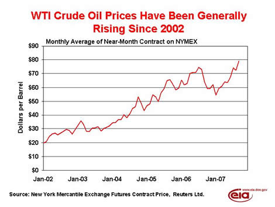
In the past, factors such as warmer than normal weather during the peak winter months, and the absence of infrastructure damage due to hurricanes, have helped to keep a lid on oil prices, and even contributed to a decline in prices. More recently, a major factor keeping the price of West Texas Intermediate crude oil from reaching $80 per barrel and beyond was concern that the U.S. economy was vulnerable to a significant downturn. This concern was centered on the housing sector, particularly regarding sub-prime mortgages and related problems associated with the financial sector. However, following the Federal Reserve’s decision on September 18 to lower the federal funds rate by 0.5 percentage points, housing and other U.S. economic concerns lessened, while the price of light, sweet crude for the near-month contract on the New York Mercantile EXchange (NYMEX) reached a new nominal record. Prices continued to increase over the next few days, as the market continued to perceive an improvement in the outlook of the U.S. economy, and thus, stronger U.S. oil demand growth. In essence, while other factors contributed to a significantly tighter short-run outlook, lowering interest rates was like opening a retractable roof, allowing prices to climb higher.
So, what factors might arise in the future that could again put a ceiling on near-term oil prices? A significant increase in U.S. crude oil inventories (which dropped more than 18.3 million barrels in the four weeks between August 17 and September 14) as a result of an increase in imports (and not due to a sharp downturn in refinery throughputs), is one such factor. Another would be the passing of the current hurricane season with no significant damage to petroleum infrastructure. Additionally, if the winter begins with significantly warmer-than-normal weather, particularly in the Northeast, where most heating oil is used, the market would expect oil demand growth to be weaker over the winter period, notwithstanding any strength in the U.S. economy.
From a longer-term perspective, the factors that would keep a roof over oil prices for an extended period of time include improved access to resources, additional upstream and downstream capacity, a stronger, if delayed, demand response to recent price increases, or a prolonged weakening of global economic growth.
Retail Gasoline and Diesel Prices Higher
The U.S. average retail price for regular gasoline increased 2.5 cents last week to 281.2 cents per gallon as of September 24, 2007, 43.4 cents higher than last year. All regions gained except in the Rocky Mountains where retail regular gasoline prices fell by 0.7 cent to 281.7 cents per gallon. The East Coast tallied a 3.7-cent increase, landing at 276.9 cents per gallon. Midwest prices inched up by 0.2 cent to 286.1 cents per gallon, 65.4 cents per gallon above last year. Prices for the Gulf Coast rose 2.6 cents to settle at 270.5 cents per gallon, the lowest regional price. West Coast prices jumped 4.9 cents to 290.9 cents per gallon, the highest in the country. The average price for regular grade in California was 296.1 cents per gallon, up 5.7 cents from last week and 20.1 cents per gallon over the previous year.
Topping the $3 mark for the first time since August 28, 2006, retail diesel prices strengthened for the fourth straight week to land at 303.2 cents per gallon. The price is 6.8 cents more than last week and 43.7 cents per gallon higher than this time last year. Prices again rose in all regions of the country. The largest increase occurred on the East Coast where the price jumped 7.6 cents to 303.7 cents per gallon. The Gulf Coast increased 6.8 cents to 297.1 cents per gallon. The Rocky Mountain region price increased 5.6 cents to 302.8 cents per gallon. The Midwest and West Coast prices both settled at 305.4 cents per gallon, the highest regional prices in the country. California prices were up 7.0 cents to 309.3 cents per gallon.
Propane Continues to Post Modest Gains
While propane stockholders reported a modest gain in inventories of 0.8 million barrels last week, inventories still remain well below prior year levels for this time of year. Last week’s stock gains moved total propane inventories up to an estimated 58.9 million barrels as of September 21, 2007. Regional inventories fell 0.2 million barrels on the East Coast, but gained in the Midwest and Gulf Coast regions last week with respective increases of 0.2 million barrels and 0.8 million barrels. The combined Rocky Mountain/West Coast region showed inventories pushed higher by 0.1 million barrels during this same period. Propylene non-fuel use inventories dropped by 0.2 million barrels last week and accounted for a lower 4.0 percent share of total propane/propylene inventories from the prior week’s share.
Text from the previous editions of “This Week In Petroleum” is now accessible through a link at the top right-hand corner of this page.
| Retail Prices (Cents Per Gallon) | |||||||
| 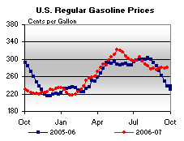 | 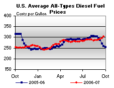 | ||||||
| Retail Data | Changes From | Retail Data | Changes From | ||||
| 09/24/07 | Week | Year | 09/24/07 | Week | Year | ||
| Gasoline | 281.2 | Diesel Fuel | 303.2 | ||||
| Spot Prices (Cents Per Gallon) | |||||||||||||||||||||||||||||||||||||||
| 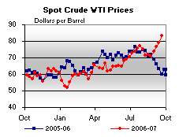 | 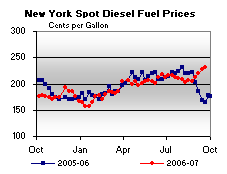 | ||||||||||||||||||||||||||||||||||||||
| 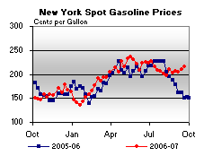 | 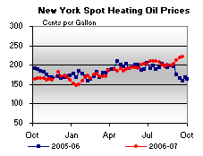 | ||||||||||||||||||||||||||||||||||||||
|
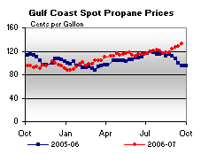 | ||||||||||||||||||||||||||||||||||||||
| Stocks (Million Barrels) | |||||||
| 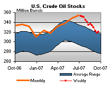 | 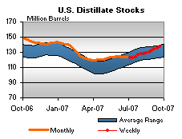 | ||||||
| 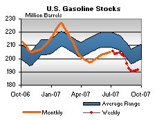 | 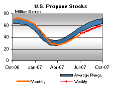 | ||||||
| Stocks Data | Changes From | Stocks Data | Changes From | ||||
| 09/21/07 | Week | Year | 09/21/07 | Week | Year | ||
| Crude Oil | 320.6 | Distillate | 137.1 | ||||
| Gasoline | 191.4 | Propane | 58.912 | ||||